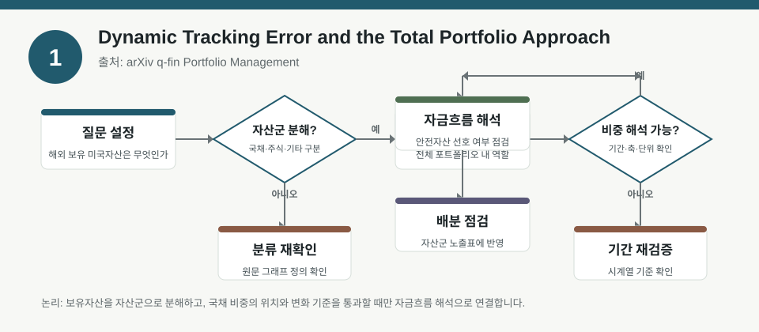
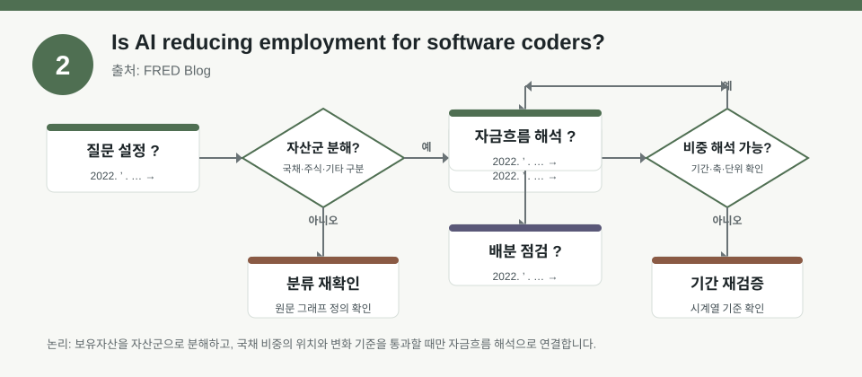
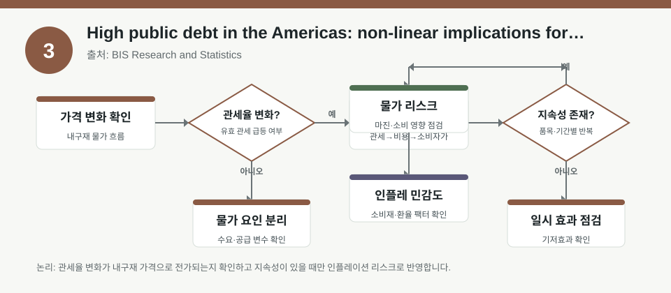

핵심 요약
- 결론: 이번 자료들은 공통적으로 “수익률 예측”보다 “가정 점검”이 더 중요하다는 점을 보여주며, 한국 투자자는 KOSPI/KOSDAQ 업종 노출과 환율·금리·인플레이션·변동성 민감도를 함께 확인해야 합니다.
- 원칙: 수치가 메타데이터에 없으면 사실로 단정하지 말고, 백테스트 전제·리밸런싱 규칙·리스크 버퍼·정책 변수는 검증 항목으로 남겨야 합니다.
주목할 자료
| 번호 | 자료 | 출처 | 원문 | 핵심 내용 | 데이터 포인트 | 리스크/한계 |
|---|---|---|---|---|---|---|
| 1 | Dynamic Tracking Error and the Total Portfolio Approach | arXiv q-fin Portfolio Management | 원문 보기 | 위원회가 허용한 추적오차를 먼저 정하고, 그 안에서 총포트폴리오 방식의 자본 배분과 벤치마크 관리를 설계하자는 논지입니다. | 추적오차 예산, 허용 손실, 벤치마크 기준점, 총포트폴리오 구성 제약을 점검해야 합니다. | 초록 메타데이터만으로는 수치·샘플·검증기간을 알 수 없어 실제 효용은 본문에서 확인이 필요합니다. |
| 2 | Is AI reducing employment for software coders? | FRED Blog | 원문 보기 | 소프트웨어 코더 고용 둔화가 경기 둔화가 아니라 AI 도입에 따른 직무별 충격일 수 있다는 해석을 제시합니다. | 산업 둔화와 직무 충격을 분리하는 고용 시계열, AI 노출도, 생산성·임금·채용 공백 지표를 확인해야 합니다. | 블로그 해석이므로 인과관계와 표본 범위는 원자료·연구 설계를 함께 검증해야 합니다. |
| 3 | High public debt in the Americas: non-linear implications for risk premia and inflation expectations | BIS Research and Statistics | 원문 보기 | 공공부채가 높을수록 위험프리미엄과 인플레이션 기대가 비선형적으로 움직일 수 있다는 점을 다룹니다. | 부채 수준, 인플레이션 기대, 장단기 금리 스프레드, 국가별 위험프리미엄의 비선형 구간을 점검해야 합니다. | 지역·정책·시장구조 차이가 커서 한국에 바로 대입하기보다 비교 프레임으로만 봐야 합니다. |
자료별 상세
1. Dynamic Tracking Error and the Total Portfolio Approach

- 핵심: 벤치마크를 먼저 고정하기보다, 감내 가능한 손실과 추적오차 예산을 먼저 정한 뒤 포트폴리오를 설계하자는 관점입니다.
- 데이터 포인트: 추적오차, 드로우다운 허용치, 벤치마크 이탈 폭, 총포트폴리오 재배분 규칙을 함께 봐야 합니다.
- 리스크: 초록만으로는 어떤 자산군·기간·시장 국면에서 성과가 확인됐는지 알 수 없습니다.
- 투자전략 반영 예시: KOSPI/KOSDAQ 업종 비중을 점검할 때도 “지수 대비 이탈 허용치”와 환율·금리 민감도 한도를 체크리스트로 두면 해석이 쉬워집니다.
- 실행 예시: 분기별로 업종별 편차, 외화자산 비중, 금리 민감 업종 비중을 적어 두고 추적오차가 커지는 구간을 따로 기록합니다.
2. Is AI reducing employment for software coders?

- 핵심: 코더 고용 둔화가 경기 사이클만의 문제가 아니라 AI 도입의 직무 대체 효과일 수 있다는 점을 시사합니다.
- 데이터 포인트: 고용 감소의 원인을 산업 경기와 기술 충격으로 나눠 읽는 것이 핵심입니다.
- 리스크: FRED 블로그 해석은 설명력은 높아도, 인과를 확정하려면 원자료와 연구 식별 전략을 확인해야 합니다.
- 투자전략 반영 예시: 한국 투자자는 IT·소프트웨어·플랫폼 업종의 실적을 볼 때 채용, 생산성, 인건비, AI 도입 속도를 분리해 확인하는 항목을 둘 수 있습니다.
- 실행 예시: 분기 실적 점검표에 “인력 증가율 대비 매출 성장”, “AI 관련 CapEx/인건비 비중”, “채용 공고 추세”를 넣어 업종 내 차이를 비교합니다.
3. High public debt in the Americas: non-linear implications for risk premia and inflation expectations

- 핵심: 공공부채가 높아질수록 위험프리미엄과 인플레이션 기대가 직선적으로 움직이지 않을 수 있어, 임계구간과 비선형 반응을 봐야 합니다.
- 데이터 포인트: 부채 수준 자체보다 그 수준에서 금리·물가 기대·리스크 프리미엄이 어떻게 바뀌는지가 중요합니다.
- 리스크: 미국 대륙 사례를 한국에 그대로 적용할 수 없고, 통화정책 신뢰도와 시장구조 차이를 반드시 고려해야 합니다.
- 투자전략 반영 예시: 한국 투자자는 국채금리, 회사채 스프레드, 원화 환율, 외국인 수급을 함께 보며 부채·물가 민감 업종의 변동성 체크리스트를 만들 수 있습니다.
- 실행 예시: 금리 상승기와 인플레이션 재상승 구간을 가정한 스트레스 테스트로 금융·건설·성장주 노출의 민감도를 비교합니다.
팩터·리스크·포트폴리오 관점
- 핵심: 세 자료 모두 “팩터 노출을 어떻게 측정하고, 어떤 리스크 예산으로 버틸 것인가”를 먼저 묻고 있어, 한국 투자자도 업종 배분보다 노출 관리와 가정 검증을 우선해야 합니다.
- 검수: 수치가 없는 상태에서는 성과 주장보다 추적오차 규칙, 고용 해석의 인과식별, 부채-물가 비선형 임계값을 본문에서 확인하는 절차가 필요합니다.
정리
- 결론: 이번 자료의 공통점은 시장 방향 예측보다 포트폴리오 제약, 데이터 해석, 정책 변수 점검이 더 중요하다는 점입니다.
- 다음 확인: 본문에서 표본 기간, 변수 정의, 백테스트 재현 규칙, 비선형 구간 설정, 한국 시장에의 적용 가능 범위를 확인해야 합니다.